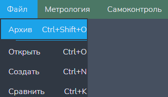
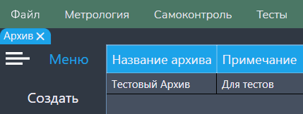
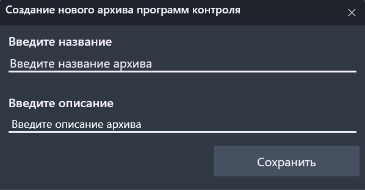
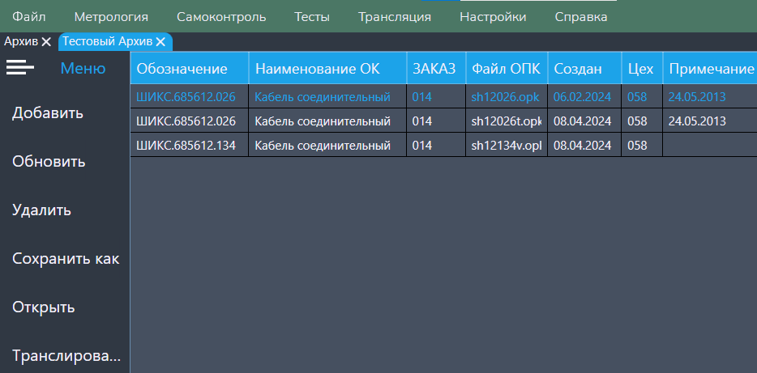

Функция "Архив"
В данной функции можно создать, просмотреть и изменить содрежание архивов (расширение *.APKW).
Архив - хранилише программ контроля (расширения: *.pk, *.Pk, *.PK).
Путь и вызов
Нахождение в программе
Верхнее меню → "Файл" → "Архив"
Горячие клавишы
Ctrl + Shift + OНа изображении показано нахождение данной функции в программе:

Действия после нажатия
После нажатия горячих клавиш или ЛКМ по кнопке "Архив" открывается меню управления архивами (рисунок 2).

Меню предоставляет возможность:
- Добавить новый архив (кнопка "Добавить" → меню добавления нового архива, см. рисунок 3).
-
Отркыть архив.
Важно: каждый архив открывается в отдельной вкладке.

Меню архива
Нажав быстро два раза ЛКМ по нужному нам архиву в отдельной вкладке откроется меню архива (рисунок 4).

В данном меню доступен следующий функционал:
- "Добавить" - добавление новой записи в архиве;
- "Обновить" - обновление информации о содержании архива;
- "Удалить" - удаление записи из архива;
- "Сохранить как" - сохранение записи из архива отдельным файлом (расширение *.pk);
- "Открыть" - открыть содержание выбранной записи в отдельной вкладке;
- "Транслировать" - трансляция содержимого выбранной записи.